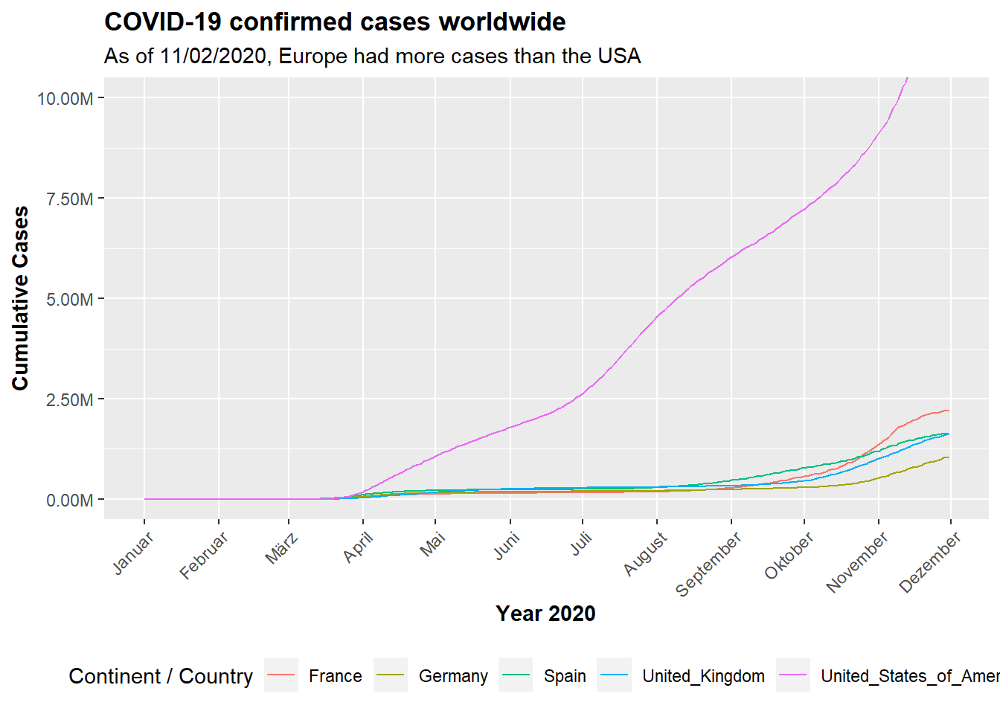

Journal (reproducible report)
Nele Helena Thomsen
2020-11-28
Last compiled: 2020-12-05
First, it is necessary to load the required packages containing all functions and objects that might be useful for the following exercises. They can be downloaded directly from the CRAN website or using the command line.
# packages
pkgs_cran <- c(
"fs", # working with the file system
"readxl", # reading excel files
"writexl", # saving data as excel files
"tidyverse", # dplyr, ggplot2, tibble, tidyr, readr, purrr, stringr, forcats
"lubridate", # working with dates and times
"devtools", # used to install non-CRAN packages
"RSQLite", # to open up a connection to the database
"dplyr",
"DBI",
"httr", # for http requests
"glue", # concatenation and interpolation of strings
"jsonlite", # JSON structure <-> character format
"rstudioapi", # credentials
"rvest", # finding the relevant fields which contain the desired information
"stringr", # for data cleaning and preparation
"stringi", # character string/ text processing
"xopen", # quickly opening URLs
"furrr", # parallel Processing
"data.table", # alternative to default data.frame or tibble to handle tabular data
"vroom", # fast reading in of delimited files
"tictoc", # counter
"ggmap", # for map_data
"mapsapi", # for google maps API
"leaflet", # visualizing the route from google maps
"leaflet.providers",
"scales"
)
install.packages(pkgs_cran)
# libraries
library("writexl")
library("fs")
library("devtools")
library(tidyverse)
library(readxl)
library(lubridate)
library("RSQLite")
library("dplyr")
library("DBI")
library(httr)
library(glue)
library(jsonlite)
library("rstudioapi")
library(rvest)
library("stringr")
library(xopen)
library(stringi)
library(data.table)
library(vroom)
library(tictoc)
library(maps)
library(ggmap)
library(mapsapi)
library(scales)
library(leaflet)
library("leaflet.providers")1 Intro to the tidyverse
Possibly the most significant collection of packages in this context is the tidyverse. It contains many useful packages that are in some sense matched to each other. One powerful concept is the pipe from the magrittr package. This helps to make the code better readable and clearer.
Another important tool is the tibble. This is a data frame that is used to replace the conventional data.frame because it has some improvements. A further characteristic of the tidyverse is the concept of so called Tidy Data, meaning that each data table cell contains exactly one value. There are many functions and operations for the transformation of data into a form in which the data can be handled comfortably and clearly. There is for example the package lubridate which provides many facilities to convert and manipulate dates and times. In addition, numerous concepts are applied in the following sections.
The first exercise gives a short overview of the import of files, as well as examination and joining of data. It deals with the analysis of sales and utilizes data from bicycles stores.
# import files
bikes_tbl <- read_excel("DS_101/00_data/01_bike_sales/01_raw_data/bikes.xlsx")
orderlines_tbl <- read_excel("DS_101/00_data/01_bike_sales/01_raw_data/orderlines.xlsx")
bikeshops_tbl <- read_excel("DS_101/00_data/01_bike_sales/01_raw_data/bikeshops.xlsx")
# examine data
glimpse(bikeshops_tbl)## Rows: 30
## Columns: 5
## $ bikeshop.id <dbl> 1, 2, 3, 4, 5, 6, 7, 8, 9, 10, 11, 12, 13, 14, 15, 16, ...
## $ name <chr> "Zum Goldenen Lenker", "AlexandeRad", "Fahrradladen 16"...
## $ location <chr> "Berlin, Berlin", "Hamburg, Hamburg", "Munich, Bavaria"...
## $ lat <dbl> 52.51667, 53.57532, 48.15000, 50.93333, 50.11552, 48.78...
## $ lng <dbl> 13.400000, 10.015340, 11.583333, 6.950000, 8.684167, 9....# join data
bike_orderlines_joined_tbl <- orderlines_tbl %>%
left_join(bikes_tbl, by = c("product.id" = "bike.id")) %>%
left_join(bikeshops_tbl, by = c("customer.id" = "bikeshop.id"))
# wrangling data
bike_orderlines_joined_tbl %>%
select(location) %>%
filter(str_detect(location, "^Hamburg")) %>%
unique()## # A tibble: 1 x 1
## location
## <chr>
## 1 Hamburg, Hamburgbikeshop_orderlines_wrangled_tbl <- bike_orderlines_joined_tbl %>%
separate(col = location,
into = c("city", "state"),
sep = ", ") %>%
mutate(total.price = price * quantity) %>%
select(-...1, -gender) %>%
select(-ends_with(".id")) %>%
# bind the column "order.id" back to the data
bind_cols(bike_orderlines_joined_tbl %>% select(order.id)) %>%
select(order.id, contains("order"), contains("model"), contains("category"),
price, quantity, total.price,
everything()) %>%
rename(bikeshop = name) %>%
set_names(names(.) %>% str_replace_all("\\.", "_"))After this introductory example, the first task will be performed in the following.
1.1 Sales by location
The sales data will now be analyzed under the aspect of the revenue. A graphic of the sales of the individual locations will be created as a bar plot.
# manipulate
sales_by_location_tbl <- bikeshop_orderlines_wrangled_tbl %>%
select(state, total_price) %>%
mutate(state) %>% # add state column
group_by(state) %>% # group by state and summarize sales
summarize(sales = sum(total_price)) %>%
mutate(sales_text = scales::dollar(sales, big.mark = ".",
decimal.mark = ",",
prefix = "",
suffix = " €"))
# Visualize
sales_by_location_tbl %>%
# setup canvas with the columns state (x-axis) and sales (y-axis)
ggplot(aes(x = state, y = sales)) +
# geometries
geom_col(fill = "#2DC6D6") + # bar plot
geom_label(aes(label = sales_text)) + # labels to the bars
geom_smooth(method = "lm", se = FALSE) + # trendline
theme(axis.text.x = element_text(angle = 45, hjust = 1)) +
# formatting
scale_y_continuous(labels = scales::dollar_format(big.mark = ".",
decimal.mark = ",",
prefix = "",
suffix = " €")) +
labs(
title = "Revenue by state",
subtitle = "Most bikes has been sold in North Rhine-Westphalia",
x = "",
y = "Revenue"
)
1.2 Sales by location and year
Now the sales will be analyzed for the twelve German states with a store separately. This partitioning is done using the function facet_wrap. At the end, the tibble data sets generated above are saved in three different file formats.
sales_by_year_state_tbl <- bikeshop_orderlines_wrangled_tbl %>%
select(order_date, total_price, state) %>%
mutate(year = year(order_date)) %>%
group_by(year, state) %>%
summarise(sales = sum(total_price)) %>%
ungroup() %>%
mutate(sales_text = scales::dollar(sales, big.mark = ".",
decimal.mark = ",",
prefix = "",
suffix = " €"))
# visualize
sales_by_year_state_tbl %>%
ggplot(aes(x = year, y = sales, fill = state)) +
# geometries
geom_col() +
facet_wrap(~ state) +
# formatting
scale_y_continuous(labels = scales::dollar_format(big.mark = ".",
decimal.mark = ",",
prefix = "",
suffix = " €")) +
labs(
title = "Revenue by year and state",
subtitle = "Most of the states have an upward trend",
fill = "State"
)# store files
# Excel
bikeshop_orderlines_wrangled_tbl %>%
write_xlsx("DS_101/00_data/01_bike_sales/02_wrangled_data/bikeshop_orderlines.xlsx")
# CSV
bikeshop_orderlines_wrangled_tbl %>%
write_csv("DS_101/00_data/01_bike_sales/02_wrangled_data/bikeshop_orderlines.csv")
# RDS
bikeshop_orderlines_wrangled_tbl %>%
write_rds("DS_101/00_data/01_bike_sales/02_wrangled_data/bikeshop_orderlines.rds")2 Data Acquisition
This second chapter deals with the import of data into the R sessions so it can be viewed, stored and analyzed. There are many more possibilities for getting data than just saving them as csv or Excel files. An increasingly popular and significant method is web scraping. The amount of unstructured data over the web grows rapidly and it is at the same time more and more important to generate useful information from it. Web scraping is a technique for converting this unstructured data to the structured format which can easily be accessed and used.
The web page itself is written in specific coding languages that are then interpreted by the web browsers. The main languages are Hypertext Markup Language (HTML), Cascasing Style Sheets (CSS) and Javascript. The first gives a web page its structure and content, whereas CSS is responsible for its style and look and Javascript for the functionality.
Another method of data acquisition uses application programming interfaces (APIs). This accesses the web data stored at some remote server utilizing the url path. This technique is addressed by the first exercise of this chapter before the topic web scraping is covered.
2.1 Getting data via an API
There are two types of url that depend on the respective API, directory-based url and parameter-based url which contain key value pairs separated by an ampersand & and start with a ?.
The API work with Hypertext Transfer Protocol (HTTP) to enable communications between clients and servers. The GET and the POST request are hereby the most important actions. They are used to request data from a specific resource and to send data to a server to create or update a resource, respectively.
The request transmits to the server running the API what information is desired. That computer will then read this code, process the request, and return formatted data that can be easily parsed by the R libraries.
Almost all APIs use JavaScript Object Notation (JSON) for sending and receiving text and numbers in the body. This is a file format used for storing and transmitting data consisting of attribute–value pairs and array data types.
For this exercise I decided to apply the Google Maps Directions API and get data about any desired route. Therefore I generated an API key on the Google Maps Platform and set the limit of possible requests. Then I defined the origin and the destination as well as vectors for the traveling models and modes such as driving, transit, walking and bicycling. It is also possible to specify a certain departure time and whether alternative routes are to be calculated.
The visualization is done using the function leaflet and can be implemented so that the individual route segments are displayed.
# API parameter
key <- Sys.getenv('key')
url <- "https://maps.googleapis.com/maps/api/directions/json?"
modes <- c("driving","transit", "walking", "bicycling")
tra_model <- c("best_guess", "pessimistic", "optimistic")
avoid = c(NA, "tolls", "highways", "ferries", "indoor")
dep_time = Sys.time() + as.difftime(1, units = "hours")
route = mp_directions(
origin = "Schoene Aussicht Hamburg",
destination = "Elbphilharmonie Hamburg",
#departure_time = dep_time,
mode = modes[[1]],
#traffic_model = tra_model[[1]],
alternatives = FALSE,
key = key,
quiet = TRUE
)
route_data = mp_get_routes(route)
# visualization
pal = colorFactor(palette = "Dark2", domain = route_data$alternative_id)
#leaflet() %>%
# addProviderTiles("CartoDB.DarkMatter") %>%
# addPolylines(data = route_data, opacity = 0.9, weight = 6, color = ~pal(alternative_id))
# extract separate segments
route_seg = mp_get_segments(route)
head(route_seg)## Simple feature collection with 6 features and 12 fields
## geometry type: LINESTRING
## dimension: XY
## bbox: xmin: 10.00941 ymin: 53.56434 xmax: 10.01964 ymax: 53.57179
## geographic CRS: WGS 84
## alternative_id leg_id segment_id summary travel_mode
## 1-1-1 1 1 1 An der Alster driving
## 1-1-2 1 1 2 An der Alster driving
## 1-1-3 1 1 3 An der Alster driving
## 1-1-4 1 1 4 An der Alster driving
## 1-1-5 1 1 5 An der Alster driving
## 1-1-6 1 1 6 An der Alster driving
## instructions
## 1-1-1 Head <b>south</b> on <b>Schöne Aussicht</b> toward <b>Auguststraße</b>
## 1-1-2 Turn <b>left</b> onto <b>Auguststraße</b>
## 1-1-3 Turn <b>right</b> onto <b>Heinrich-Hertz-Straße</b>
## 1-1-4 Turn <b>right</b> at the 1st cross street onto <b>Hofweg</b>
## 1-1-5 Continue onto <b>Papenhuder Str.</b>
## 1-1-6 Turn <b>right</b> onto <b>Mundsburger Damm</b>
## distance_m distance_text duration_s duration_text departure_time
## 1-1-1 158 0.2 km 30 1 min <NA>
## 1-1-2 325 0.3 km 72 1 min <NA>
## 1-1-3 129 0.1 km 46 1 min <NA>
## 1-1-4 365 0.4 km 62 1 min <NA>
## 1-1-5 371 0.4 km 77 1 min <NA>
## 1-1-6 179 0.2 km 30 1 min <NA>
## arrival_time geometry
## 1-1-1 <NA> LINESTRING (10.00941 53.571...
## 1-1-2 <NA> LINESTRING (10.01047 53.569...
## 1-1-3 <NA> LINESTRING (10.01412 53.571...
## 1-1-4 <NA> LINESTRING (10.01602 53.571...
## 1-1-5 <NA> LINESTRING (10.01806 53.568...
## 1-1-6 <NA> LINESTRING (10.01964 53.565...pal = colorFactor(
palette = sample(colors(), length(unique(route_seg$segment_id))),
domain = route_seg$segment_id
)
#leaflet(route_seg) %>%
# addProviderTiles("CartoDB.DarkMatter") %>%
# addPolylines(opacity = 0.9, weight = 6, color = ~pal(segment_id), popup = ~instructions)2.2 Creating a database using web scraping
Model names and prices for one category of bikes offered by a website:
# product families:
bike_family_tbl <- read_html("https://www.rosebikes.com/bikes") %>%
html_nodes(css = ".catalog-navigation__link") %>% # get the nodes for the families
html_attr('title') %>% # extract the information of id attribute
enframe(name = "position", value = "family_class") %>% # convert vector to tibble
mutate( # add hashtag to get nodes of the categories by id (#)
family_id = str_glue("#{family_class}")
)
bike_family_tbl## # A tibble: 10 x 3
## position family_class family_id
## <int> <chr> <glue>
## 1 1 MTB #MTB
## 2 2 Road #Road
## 3 3 Gravel #Gravel
## 4 4 Cyclocross #Cyclocross
## 5 5 Hybrid #Hybrid
## 6 6 Fitness #Fitness
## 7 7 Touring #Touring
## 8 8 Urban #Urban
## 9 9 Kids #Kids
## 10 10 Sale #Sale# product categories:
# combine all Ids to one string to get all nodes at once (separated by the operator ",")
family_id_css <- bike_family_tbl %>%
pull(family_id) %>%
stringr::str_c(collapse = ", ")
family_id_css## [1] "#MTB, #Road, #Gravel, #Cyclocross, #Hybrid, #Fitness, #Touring, #Urban, #Kids, #Sale"# extract the urls from the href attribute
bike_category_tbl <- read_html("https://www.rosebikes.com/bikes/mtb") %>%
html_nodes(css = ".catalog-category-bikes__picture-wrapper") %>%
html_attr('href') %>%
enframe(name = "position", value = "subdirectory") %>%
mutate( # add the domain, because we will get only the subdirectories
url = glue("https://www.rosebikes.com{subdirectory}")
) %>%
distinct(url) # some categories are listed multiple times.
bike_category_tbl## # A tibble: 9 x 1
## url
## <glue>
## 1 https://www.rosebikes.com/bikes/mtb/trail-/-enduro/ground-control
## 2 https://www.rosebikes.com/bikes/mtb/trail-/-enduro/root-miller
## 3 https://www.rosebikes.com/bikes/mtb/trail-/-enduro/pikes-peak
## 4 https://www.rosebikes.com/bikes/mtb/dirt/the-bruce
## 5 https://www.rosebikes.com/bikes/mtb/cross-country/count-solo
## 6 https://www.rosebikes.com/bikes/mtb/cross-country/psycho-path
## 7 https://www.rosebikes.com/bikes/mtb/cross-country/thrill-hill
## 8 https://www.rosebikes.com/bikes/mtb/cross-country/thrill-hill-trail
## 9 https://www.rosebikes.com/bikes/mtb/freeride/soul-firebike_prices_tbl <-read_html("https://www.rosebikes.com/bikes/mtb") %>%
html_nodes(css = ".catalog-category-bikes__price-title") %>%
#str_remove(pattern = "\\?.*") %>%
html_text() %>%
stringr::str_extract("(?<=from ).*")
bike_prices_tbl ## [1] "\2001,699.00" "\2001,999.00" "\2003,099.00" NA NA "\2001,849.00"
## [7] "\2002,599.00" "\2002,899.00" "\2002,149.00"get_bike_data <- function(url) {
html_bike_category <- read_html(url)
# get the URLs
bike_url_tbl <- html_bike_category %>%
html_nodes(css = ".catalog-category-model > a") %>%
html_attr('href') %>%
str_remove(pattern = "\\?.*") %>%
enframe(name = "position", value = "url")
}
# extract the urls as a character vector
bike_category_url_vec <- bike_category_tbl %>%
pull(url)
# run the function with every url as an argument
#bike_data_lst <- map(bike_category_url_vec, get_bike_data)
bike_data_lst <- lapply(bike_category_url_vec, get_bike_data)
bike_data_lst[[4]] <- bike_category_tbl$url[4] # contains no price
bike_data_lst[[5]] <- bike_category_tbl$url[5] # contains no price
bike_data_lst[[8]] <- bike_category_tbl$url[8]
bike_data_lst## [[1]]
## # A tibble: 4 x 2
## position url
## <int> <chr>
## 1 1 /rose-ground-control-1-2693541
## 2 2 /rose-ground-control-2-2693542
## 3 3 /rose-ground-control-3-2693543
## 4 4 /rose-ground-control-4-2693544
##
## [[2]]
## # A tibble: 3 x 2
## position url
## <int> <chr>
## 1 1 /rose-root-miller-1-2693526
## 2 2 /rose-root-miller-2-2693527
## 3 3 /rose-root-miller-3-2693531
##
## [[3]]
## # A tibble: 3 x 2
## position url
## <int> <chr>
## 1 1 /rose-pikes-peak-1-2686288
## 2 2 /rose-pikes-peak-2-2689166
## 3 3 /rose-pikes-peak-3-2686289
##
## [[4]]
## https://www.rosebikes.com/bikes/mtb/dirt/the-bruce
##
## [[5]]
## https://www.rosebikes.com/bikes/mtb/cross-country/count-solo
##
## [[6]]
## # A tibble: 2 x 2
## position url
## <int> <chr>
## 1 1 /rose-psycho-path-2-2693312
## 2 2 /rose-psycho-path-3-2693299
##
## [[7]]
## # A tibble: 6 x 2
## position url
## <int> <chr>
## 1 1 /rose-thrill-hill-1-2681087
## 2 2 /rose-thrill-hill-2-2681092
## 3 3 /rose-thrill-hill-3-2681106
## 4 4 /rose-thrill-hill-4-2681110
## 5 5 /rose-thrill-hill-5-2681112
## 6 6 /rose-thrill-hill-6-2681124
##
## [[8]]
## https://www.rosebikes.com/bikes/mtb/cross-country/thrill-hill-trail
##
## [[9]]
## # A tibble: 4 x 2
## position url
## <int> <chr>
## 1 1 /rose-soul-fire-1-2693517
## 2 2 /rose-soul-fire-dh-2693524
## 3 3 /rose-soul-fire-2-2693518
## 4 4 /rose-soul-fire-3-2693523#saveRDS(bike_data_tbl, "bike_data_tbl.rds")What should now be documented are the following aspects. First, web scraping is a well suited method for analyzing static and well structured web pages. Because the underling HTML code can change anytime in design or for updating details, it is important to identify these changes to the web page and modify the web scraping script accordingly. Secondly, often an API is available by the service provider or organization. It is always advisable to use the API. Finally it should be mentioned that websites should not be flooded with requests. It is advisable to have some time gap between the requests so that the IP address is not blocked from accessing the website.
3 Data Wrangling
The collected “raw” data have now to be transformed into a format that is more appropriate and valuable for a variety of downstream purposes such as analytics. This process is called data wrangling and contains the cleaning and preparation for the subsequent analysis.The data transformations include such actions as extraction, reshaping, joining, splitting and combining, cleansing and filtering to create desired wrangling outputs that can be leveraged later on. The corresponding functions work with columns (features), rows (observations), groups and summarized data.
The following calculations deal with the wrangling of large data sets using R’s data.table. The used data sets are freely accessible and contain information on patents registered worldwide in the past years. This includes the applicant, date, country, title, subject, ID and much more. The source is the United States Patent and Trademark Office (USPTO) which is intended to increase the usability and value of patent data.
First, the downloaded files have to be imported:
## patent
col_types_patent <- list(
id = col_character(),
date = col_date("%Y-%m-%d"),
num_claims = col_double()
)
patent_tbl <- vroom(
file = "patent.tsv/patent.tsv",
delim = "\t",
col_types = col_types_patent,
na = c("", "NA", "NULL")
)
patent_tbl %>% glimpse()## Rows: 327,014
## Columns: 3
## $ id <chr> "8621662", "8621663", "8621664", "8621665", "8621666", "...
## $ date <date> 2014-01-07, 2014-01-07, 2014-01-07, 2014-01-07, 2014-01...
## $ num_claims <dbl> 11, 6, 10, 18, 7, 9, 21, 19, 8, 18, 7, 15, 15, 15, 18, 7...## assignee
col_types_assignee <- list(
id = col_character(),
type = col_character(),
organization = col_character()
)
assignee_tbl <- vroom(
file = "patent.tsv/assignee.tsv",
delim = "\t",
col_types = col_types_assignee,
na = c("", "NA", "NULL")
)
assignee_tbl %>% glimpse()## Rows: 47,011
## Columns: 3
## $ id <chr> "org_004j997jM9yEdS7z4ReD", "org_005hVGA5JMOZsS0xOhGa"...
## $ type <chr> "3", "3", "2", "2", "3", "3", "2", "3", "2", "3", "2",...
## $ organization <chr> "University of Basel", "Zetkama Spólka Akcyjna", "Mira...## patent_assignee
col_types_patent_assignee <- list(
patent_id = col_character(),
assignee_id = col_character()
)
patent_assignee_tbl <- vroom(
file = "patent.tsv/patent_assignee.tsv",
delim = "\t",
col_types = col_types_patent_assignee,
na = c("", "NA", "NULL")
)
patent_assignee_tbl %>% glimpse()## Rows: 315,910
## Columns: 2
## $ patent_id <chr> "8709412", "8636251", "8899346", "8700141", "8724986", ...
## $ assignee_id <chr> "org_MPhnVOTFsXybN0auC647", "org_v7VisXnmZZEEUMeHhW6y",...## uspc
col_types_uspc <- list(
patent_id = col_character(),
mainclass_id = col_character(),
sequence = col_character()
)
uspc_tbl <- vroom(
file = "patent.tsv/uspc.tsv",
delim = "\t",
col_types = col_types_uspc,
na = c("", "NA", "NULL")
)
uspc_tbl %>% glimpse()## Rows: 815,743
## Columns: 3
## $ patent_id <chr> "8829273", "8623780", "8904894", "8794165", "8773920",...
## $ mainclass_id <chr> "435", "502", "368", "111", "365", "128", "709", "707"...
## $ sequence <chr> "7", "2", "0", "1", "0", "4", "2", "1", "2", "2", "10"...setDT(patent_tbl)
setDT(assignee_tbl)
setDT(patent_assignee_tbl)
setDT(uspc_tbl)3.1 Patent dominance
The 10 US companies with the most assigned/granted patents:
a_p_a_combined <- merge(x = assignee_tbl, y = patent_assignee_tbl,
by.x = "id",
by.y = "assignee_id",
all.x = TRUE,
all.y = FALSE)
a_p_a_combined %>% glimpse()## Rows: 315,910
## Columns: 4
## $ id <chr> "org_004j997jM9yEdS7z4ReD", "org_004j997jM9yEdS7z4ReD"...
## $ type <chr> "3", "3", "3", "2", "3", "3", "3", "3", "2", "2", "2",...
## $ organization <chr> "University of Basel", "University of Basel", "Zetkama...
## $ patent_id <chr> "8728438", "8921361", "8857791", "8845559", "8815936",...setkey(a_p_a_combined, "id")
setorderv(a_p_a_combined, c("id", "organization"))
a_p_a_combined %>% glimpse()## Rows: 315,910
## Columns: 4
## $ id <chr> "org_004j997jM9yEdS7z4ReD", "org_004j997jM9yEdS7z4ReD"...
## $ type <chr> "3", "3", "3", "2", "3", "3", "3", "3", "2", "2", "2",...
## $ organization <chr> "University of Basel", "University of Basel", "Zetkama...
## $ patent_id <chr> "8728438", "8921361", "8857791", "8845559", "8815936",...us_patents <- a_p_a_combined %>%
select(1:3) %>%
filter(type == "2")%>%
group_by(organization) %>%
summarise(
count = n()
) %>%
ungroup() %>%
arrange(desc(count)) %>%
slice(1:10)3.2 Recent patent activity
The 10 US companies with the most new granted patents for 2014:
a_p_a_p_combined <- merge(x = patent_tbl, y = a_p_a_combined,
by.x = "id",
by.y = "patent_id",
all.x = TRUE,
all.y = FALSE)
setkey(a_p_a_p_combined, "id")
setorderv(a_p_a_p_combined, c("id", "organization"))
us_patents2019 <- a_p_a_p_combined %>%
filter(type == "2") %>%
filter(date >= "2014-01-01" & date <="2014-12-01")
us_patents2019 %>% glimpse()## Rows: 136,170
## Columns: 6
## $ id <chr> "8621662", "8621663", "8621666", "8621668", "8621669",...
## $ date <date> 2014-01-07, 2014-01-07, 2014-01-07, 2014-01-07, 2014-...
## $ num_claims <dbl> 11, 6, 7, 21, 19, 15, 22, 21, 20, 22, 16, 20, 11, 13, ...
## $ id.y <chr> "org_aTMUEAbUvQuADfnSfudQ", "org_FfZ2sonhh4RvKY8vYp2B"...
## $ type <chr> "2", "2", "2", "2", "2", "2", "2", "2", "2", "2", "2",...
## $ organization <chr> "Hamilton Sundstrand Space Systems International, Inc....us_patents2019 %>%
group_by(organization) %>%
summarise(
sum_claims = sum(num_claims)
) %>%
ungroup() %>%
arrange(desc(sum_claims)) %>%
slice(1:10)## # A tibble: 10 x 2
## organization sum_claims
## <chr> <dbl>
## 1 International Business Machines Corporation 109604
## 2 QUALCOMM Incorporated 80010
## 3 Google Inc. 50161
## 4 Microsoft Corporation 49918
## 5 Apple Inc. 40898
## 6 General Electric Company 29211
## 7 Intel Corporation 27679
## 8 AT&T INTELLECTUAL PROPERTY I, L.P. 26761
## 9 Hewlett-Packard Development Company, L.P. 24162
## 10 Broadcom Corporation 227633.3 Innovation in Tech
What is the most innovative tech sector? For the top 10 companies (worldwide) with the most patents, what are the top 5 USPTO tech main classes?
uspc_patents <- merge(x = uspc_tbl, y = a_p_a_p_combined,
by.x = "patent_id",
by.y = "id",
all.x = TRUE,
all.y = FALSE)
setkey(uspc_patents, "patent_id")
setorderv(uspc_patents, c("patent_id", "organization"))
tech_patents <- uspc_patents %>%
filter(sequence == "0") %>% # filter the data where the uspc class appears in the patent file in first place
filter(type == "2" | type == "3") %>% # filter the companies
select(1,2,5,8) %>%
group_by(organization) %>%
mutate(sum_claims = sum(num_claims)) %>%
ungroup() %>%
arrange(desc(sum_claims))
max <- distinct(tech_patents, sum_claims) %>%
sum(1:10)
tech_patents %>%
slice(1:max) %>%
group_by(mainclass_id) %>%
summarise(
count = n()
) %>%
ungroup() %>%
arrange(desc(count)) %>%
slice(1:5)## # A tibble: 5 x 2
## mainclass_id count
## <chr> <int>
## 1 257 10192
## 2 370 8341
## 3 455 7808
## 4 709 5587
## 5 438 5078- 257 Active solid-state devices (e.g., transistors, solid-state diodes)
- 370 Multiplex communications
- 455 Telecommunications
- 709 Electrical computers and digital processing systems: multicomputer data transferring
- 438 Semiconductor device manufacturing: process
4 Data Visualization
Data visualization is the presentation of data in a pictorial or graphical format. It refers to the techniques used to communicate data or information by encoding it as visual objects. The goal is to see analytics presented visually, in order to grasp difficult concepts or identify new patterns. In this way information can be communicated clearly and efficiently.
4.1 Time course of the cumulative Covid-19 cases
covid_data_tbl <- read_csv("https://opendata.ecdc.europa.eu/covid19/casedistribution/csv")
covid_data2020_tbl <- covid_data_tbl %>%
select(1:5, 7, 10, 11, 12) %>%
mutate(date = dmy(dateRep)) %>%
arrange(date) %>%
filter(month != "12") %>%
filter(year == "2020") %>%
filter(countriesAndTerritories %in% c("Germany", "France","United_Kingdom","Spain", "United_States_of_America")) %>%
group_by(countriesAndTerritories) %>%
mutate(cumulative_cases = cumsum(cases)) %>%
ungroup()
#covid_data2020_tbl$dates <- as.Date(covid_data2020_tbl$dateRep, "%d/%m/%Y")
covid_data2020_tbl %>% glimpse()## Rows: 1,675
## Columns: 11
## $ dateRep <chr> "01/01...
## $ day <dbl> 1, 1, ...
## $ month <dbl> 1, 1, ...
## $ year <dbl> 2020, ...
## $ cases <dbl> 0, 0, ...
## $ countriesAndTerritories <chr> "Franc...
## $ popData2019 <dbl> 670128...
## $ continentExp <chr> "Europ...
## $ `Cumulative_number_for_14_days_of_COVID-19_cases_per_100000` <dbl> NA, NA...
## $ date <date> 2020-...
## $ cumulative_cases <dbl> 0, 0, ...covid_data2020_tbl %>% #aes(x=dates, y =cumulative_cases)
ggplot()+
geom_line(aes(x = date,
y = cumulative_cases,
color = countriesAndTerritories),
size = 0.5) +
scale_x_date(breaks = "1 month", minor_breaks = "1 month", date_labels = '%B') + #, date_labels =c('January', 'February','March', 'April','May', 'June','July', 'August','September', 'October','November')) +
#scale_x_date(breaks = month(dates), labels =c('January', 'February','March', 'April','May', 'June','July', 'August','September', 'October','November')) +
scale_y_continuous(labels = scales::dollar_format(scale = 1e-6,
prefix = "",
suffix = "M")) +
labs(
title = "COVID-19 confirmed cases worldwide",
subtitle = "As of 11/02/2020, Europe had more cases than the USA",
x = "Year 2020",
y = "Cumulative Cases",
color = "Continent / Country"
) +
theme(
axis.text.x = element_text(angle = 45, hjust = 1),
legend.position = "bottom",
plot.title = element_text(face = "bold"),
axis.title = element_text(face = "bold")
) +
coord_cartesian(ylim = c(0, 10000000))
4.2 Distribution of the mortality rate
covid_dataworld_tbl <- covid_data_tbl %>%
select(1:4, 6:10) %>%
mutate(across(countriesAndTerritories, str_replace_all, "_", " ")) %>%
mutate(countriesAndTerritories = case_when(
countriesAndTerritories == "United Kingdom" ~ "UK",
countriesAndTerritories == "United States of America" ~ "USA",
countriesAndTerritories == "Czechia" ~ "Czech Republic",
TRUE ~ countriesAndTerritories
)) %>%
filter(year == "2020") %>%
filter(month != "12") %>%
group_by(countriesAndTerritories) %>%
summarize(countryDeaths = sum(deaths)) %>%
ungroup()
covid_dataworld_tbl$countryDeaths <- covid_dataworld_tbl$countryDeaths *(12/11)
covid_deaths_tbl <- covid_dataworld_tbl %>%
left_join(covid_data_tbl) %>%
select(1,2,11) %>%
group_by(countriesAndTerritories) %>%
distinct() %>%
mutate(Mortality_Rate = (countryDeaths / popData2019) * 100) %>%
select(1,4)
world <- map_data("world")
covid_deaths_tbl %>%
ggplot() +
geom_map(data = covid_deaths_tbl,
map = world,
aes(map_id = countriesAndTerritories, fill= Mortality_Rate),
size=0.05,
colour="black" ) +
scale_y_continuous(labels = scales::percent) +
expand_limits(x = world$long, y = world$lat)+
coord_fixed() +
scale_fill_continuous(low = 'red', high = 'black') +
theme(axis.ticks = element_blank(),
axis.text = element_blank(),
axis.title = element_blank(),
legend.position = "right",
plot.title = element_text(face = "bold")) +
labs(
title = "Confirmed COVID-19 deaths relative to the size of the population",
subtitle = "More than 1.2 Million confirmed COVID-19 deaths worldwide",
caption = "Date: 12/01/2020",
color = "Mortality Rate"
)